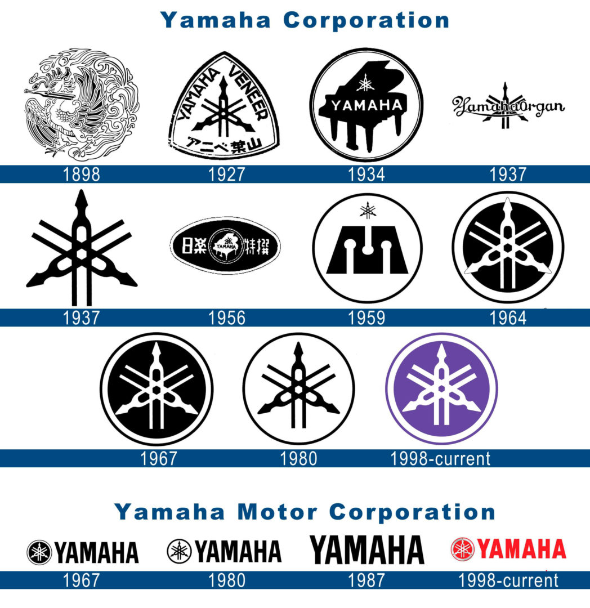

DATO CURIOSO #1
¿Qué significa el logo de Yamaha?
¿Sabías que el logotipo de Yamaha está formado por tres diapasones entrecruzados? Este símbolo representa los orígenes musicales de la empresa.
Con el tiempo, Yamaha también se hizo conocida por sus motocicletas, motores y otros productos.
Volver al inicio